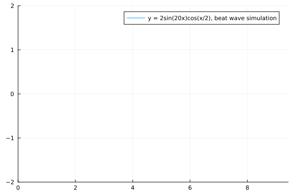

Acoustic engineer

Lu Cheng Yi


Graduate student in Ophthalmology Biomechanics Laboratory in
National Taiwan University.
My research includes fluid mechanic in eyes, cell migration model of
endothelial cells, CFD of M-phase
in cytokinesis, endothelial cell shape classification for cultivation.
RDPC Lithography, TSMC, Hsinchu - August 2021 to December 2021
ETSI dept., PAL Acoustics Technology, Taipei - July 2022 to Present
Email: b04502057@ntu.edu.tw
Phone: +886 905030583
Linkedin page: https://tw.linkedin.com/in/cheng-yi-lu